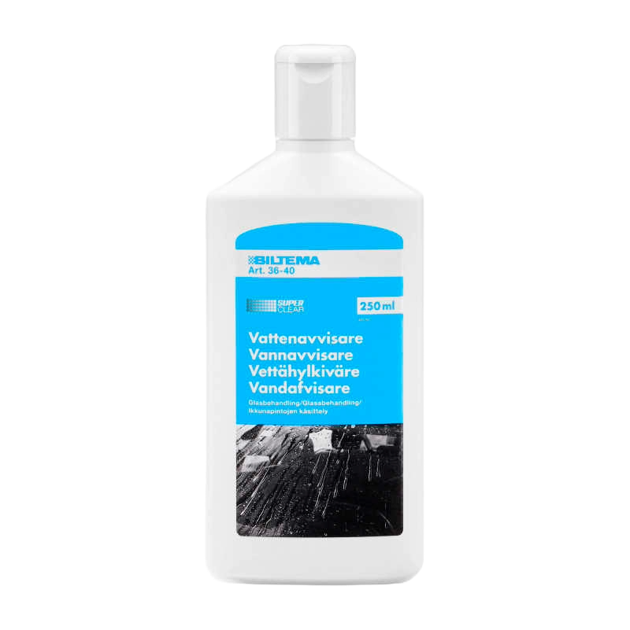

I Bergen kan man klare seg med de fleste biler. Den riktige bilen for deg kommer mest an på personlig preferanse og behov. Når det kommer til hjuldrift derimot så er det er lurt å ha bil med firehjulstrekk. Bergen har hovedsakelig vedlikeholdte og asfalterte veier, men det er kan være mye oppoverbakker. Firehjulstrekk hjelper bilen med å håndtere oppoverbakkene når vinteren kommer og isen legger seg. Hvor viktig det er avhenger av hvor man bor og bruksområder. Noen boligsoner i Bergen ligger oppover byens fjell og har bratte, svingete bakker. Der er det spesielt godt å ha firehjulstrekk. Uten skikkelig trekk på bilen kan man risikere å ikke kunne kjøre trygt opp på vinteren. Ellers så kan en tohjulstrekker oppleve problemer i Bergen, men det vil ikke være så ofte at det utgjør et stort problem. En firehjulstrekker kan også være en bonus hvis man har lyst til å lange ut på biltur i det flotte Vestlandet, men man klarer det fint med tohjulstrekk også. Det som er viktig derimot er å vedlikeholde bilen godt.
Når det gjelder dekk i Bergen må man først sikre at man møter minimumskravet i Norge. Sommerdekk skal ha minimum 1.6mm mønsterdybde over 2/3 av dekkets bredde. Vinterdekk skal ha minimum 3mm mønsterdybde over 2/3 av dekkets bredde. Piggdekk er tillatt fra 1. November til første søndag etter 2. påskedag. Det anbefales allikevel 3mm for sommerdekk og minimum 4mm for vinterdekk.
Her i byen må man være ekstra påpasselig med dekkene ettersom dekkene er nødt til å motstå store mengder vann. Risikoen for vannplaning må holdes så lav som mulig. Derfor må dekk sjekkes regelmessig for slitasje. Dekkene skal skiftes når man ser de er slitt. Selv om dekkene ikke har tilsynelatende slitasje, kan de fortsatt være utrygg. Sørg for at dekkene ikke er for gamle. Dekk som er brukt i mer enn 6 år eller eldre enn 10 år bør skiftes ut. Lufttrykk bør holdes til anbefalt nivå, sjekk lufttrykket månedlig.

For nok sikt i dårlig vær som Bergen ofte har må man sørge for at vinduene på bilen er i god stand. Vinduene til bilen bør rengjøres regelmessig. Frontruten bør kontrolleres for slitasje regelmessig. Husk å rengjøre og sjekke vindusviskerne både foran og bak samtidig. Man bør også vurdere vannavvisende behandling på frontruten, det får man kjøpt på de fleste bilbutikker.
NAF anbefaler at vindusviskere skiftes helt ut minst en gang i året. Det kan være lurt å skifte 2 ganger. En god regel er å skifte ut når høsten kommer slik at man sikrer skikkelige vindusviskere når pøsregnet kommer. Husk å skifte de bakre vindusviskerne også.
Vindusviskere får man kjøpt mange steder. Biltema har et bredt utvalg vindusviskere for både front og bakruten. Biltema selger også modeltilpasset. Hvis man er usikker på hvilke vindusviskere man skal ha kan man gå inn på kategorisiden til Biltema og skrive inn bilens registreringsnummer. Andre fysiske butikker man kan dra til er f.eks. BilExtra som ligger i de fleste av Bergens bydeler. JULA finner man på flere av byens kjøpesentre. Eventuelt kan man kjøpe på nett da det er rask leveringstid til Bergen. Man kan bestille time hos NAF, kjøpe vindusviskere og få dem skiftet ut hos dem hvis man trenger hjelp.
Andre ting vi absolutt anbefaler er å ha isskraper til vinduene liggende i bilen. Snøkost anbefales også. Bilen må ha nok spylervæske og væsken bør være egnet for årstiden man er i. Man bør rengjøre undersiden av bilen regelmessig fordi vannet man kjører gjennom kan ta med seg skit fra bakken. Understellet bør også vedlikeholdes ekstra mot rust. Man kan for eksempel bruke antirustbehandling. Det får man kjøpt på de fleste bilbutikker.